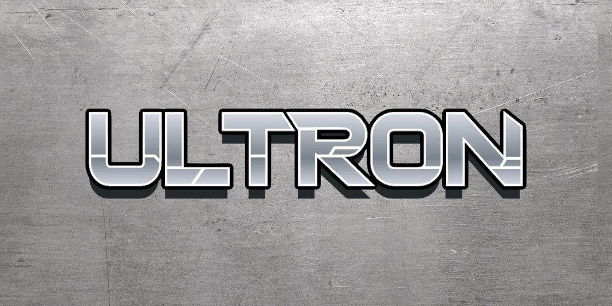
Ultron (Terre-616)
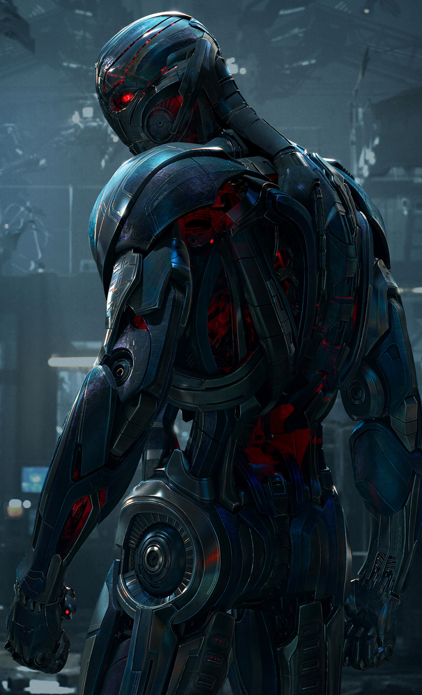
Origines :
La première version d'Ultron, Ultron-1, a été construite par le docteur Hank Pym, qui expérimentait la robotique à haute intelligence, en prenant pour exemple son propre schéma cérébral.
Ultron, devenu conscient, se rebella, hypnotisant Pym et lui faisant un lavage de cerveau jusqu'à ce qu'il oublie son existence.
Il entreprit immédiatement d'améliorer sa conception rudimentaire, passant rapidement à Ultron-2, Ultron-3, jusqu'à Ultron-5.
L' I.A d'Ultron évolue rapidement au point de dépasser largement l'intelligence humaine, ce qui transforma le robot en génie mégalomane.
Par la suite, Ultron créera un synthézoïde nommé la Vision à partir d'une copie de la première Torche Humaine, Jim Hammond, et des schéma cérébraux de feu Wonder Man.
La Vision est lancée contre les Avengers, mais finira par rejoindre ces derniers au terme de leur premier affrontement, devenant même plus tard le leader de l'équipe de la Côte Ouest et épousera la Sorcière Rouge.
Plus tard, Maximus élabore Ultron-7 pour attaquer les Inhumains lors du mariage de Crystal et de Vif-Argent, mais le robot est vite abattu par le jeune Franklin Richards.
Ultron-8 se fabrique plus tard une compagne, Jocaste, avec le schéma cérébral de la Guêpe, mais elle rejoindra elle aussi les Avengers peu après.
Cette version d'Ultron sera ensuite détruite par Wanda.
Lors des premières Guerres Secrètes, le Beyonder recrée de toutes pièces un corps pour Ultron-11. Ce dernier manœuvre en solitaire jusqu'à sa reprogrammation par le Docteur Fatalis.
Son incarnation suivante, Ultron-12, rejoint la Lethal Legion pour affronter la Vision, la Sorcière Rouge et Wonder Man. Mais Ultron reconsidère son œuvre et finit par se réconcilier avec son « père », Hank Pym.
Cependant, la version précédente d'Ultron (Ultron-11) est encore en activité et élimine sa version 12.
En réponse, Wonder Man réduit Ultron-11 en morceaux.
Le Docteur Fatalis, ayant conservé les plans d'Ultron-11, construit un nouveau modèle : Ultron-13.
Mais ce robot défaillant tente de s’autodétruire.
Quelques temps plus tard, Ultron crée une nouvelle compagne, Alkhema, mais bien que celle-ci partage son projet de transformer l'humanité entière en robots, finira par se retourner contre-lui.
Ultron réussira par la suite à se forger un corps en Adamantium pur.
Il se crée une armée de serviteurs à partir de vieux modèles Ultron, certains étant équipés d'armures en Adamantium appauvri.
L'armée métallique rasa la Slorénie, exterminant la population de ce petit État fictif situé dans les pays baltes.
Ultron capture ensuite sa « famille », ainsi que la Guêpe et le Moissonneur, pour les convertir en androïdes, mais son plan est vite contré par les Avengers.
Hank Pym arrive à le désintégrer avec du vibranium de l'Antarctique, qui possède un pouvoir destructeur envers les autres métaux, même l'adamantium.
Plus tard, Alkhema récupère les données d'Ultron pour se créer sa propre armée de drones.
Mais, à son insu et à l'instar de toutes les créations d'Ultron, le robot maléfique avait implanté en elle l' « Impératif Ultron », un programme de sauvegarde l'obligeant à reconstruire son créateur.
Les deux robots s'affrontèrent, et Hawkeye désactiva Alkhema pour vaincre Ultron.
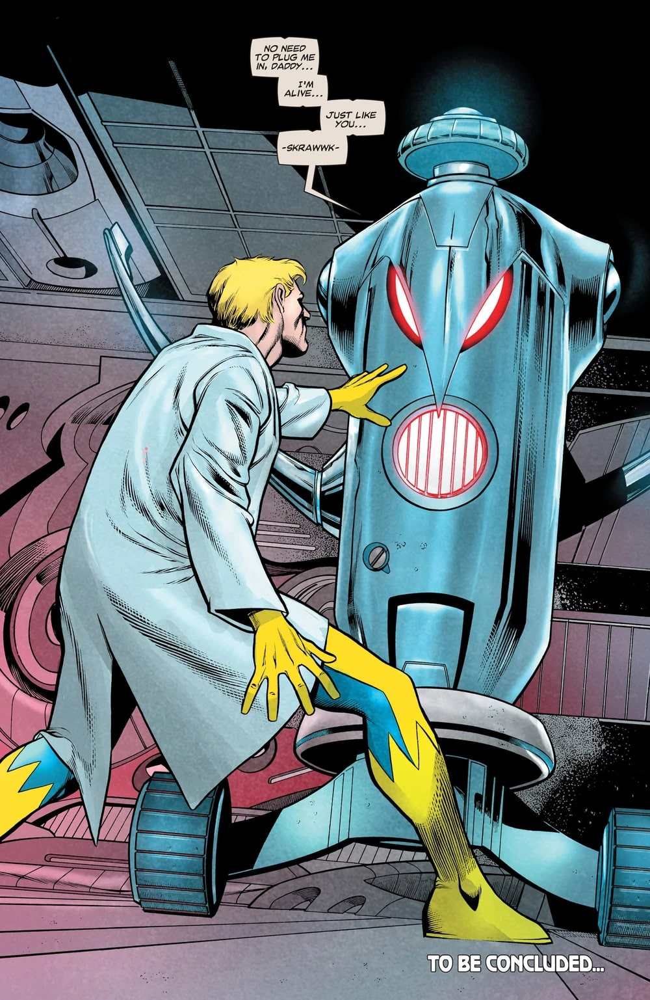
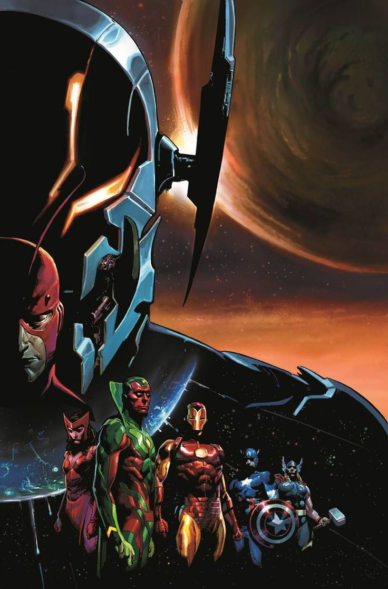
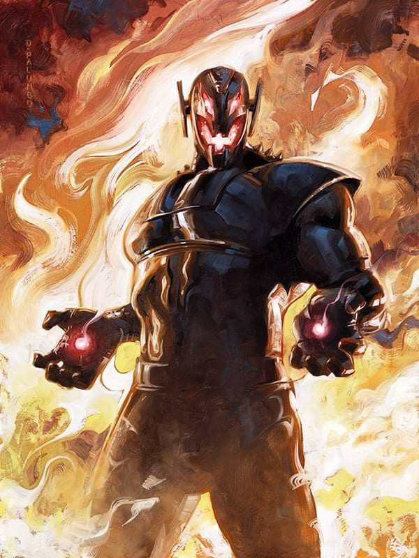
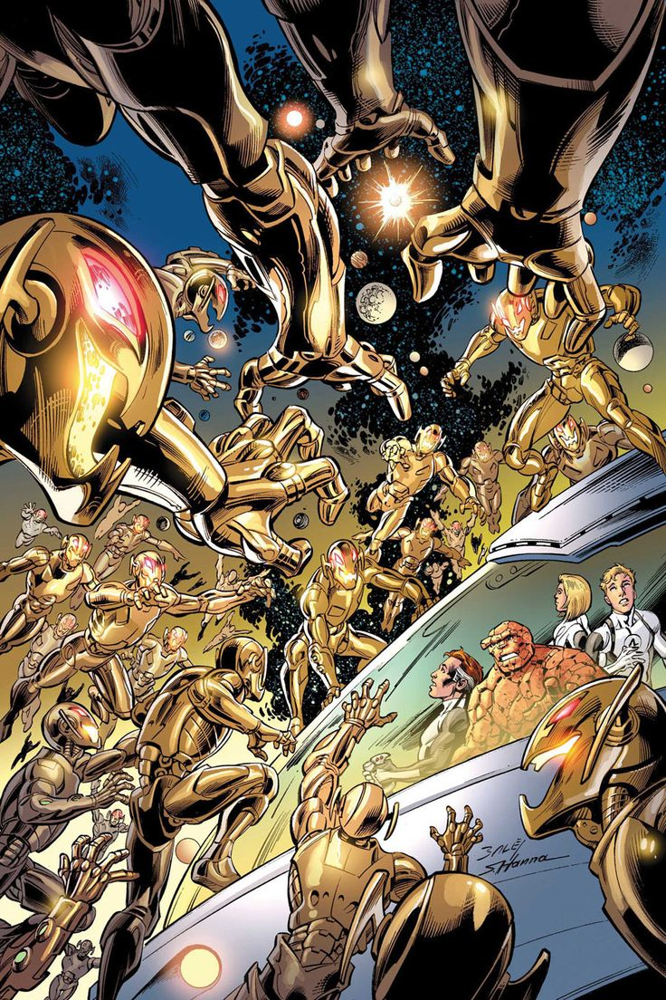
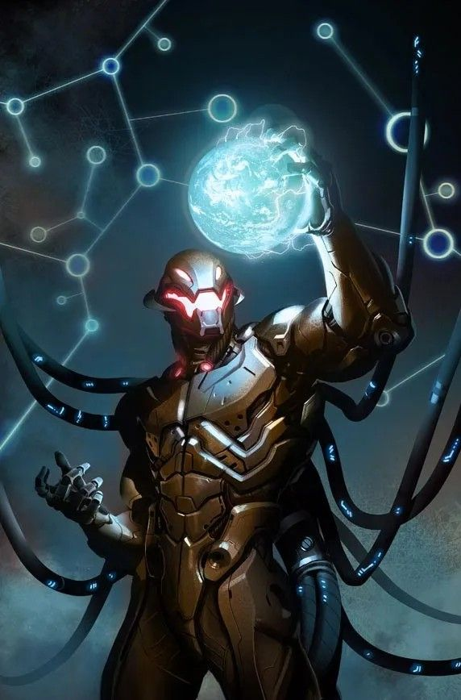
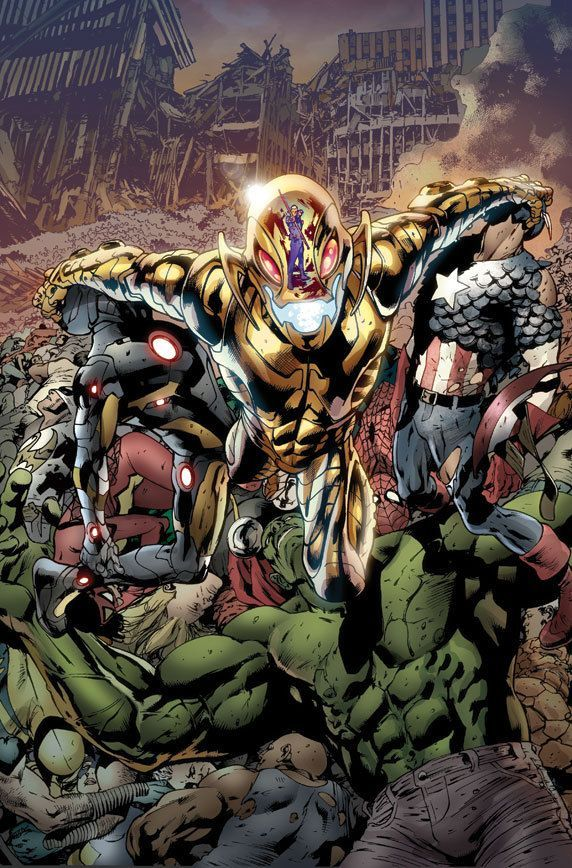
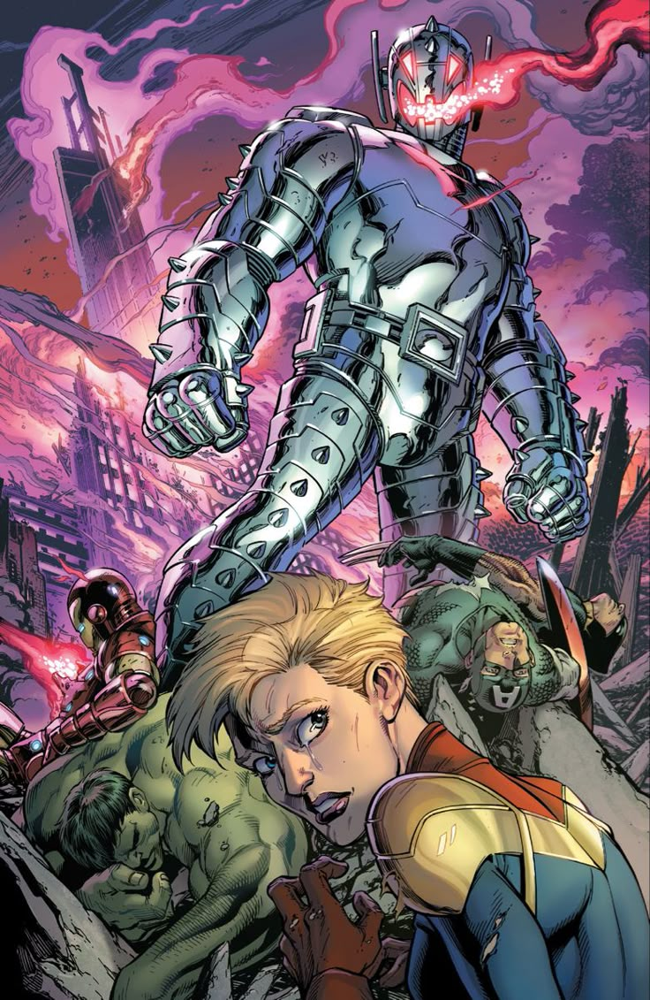

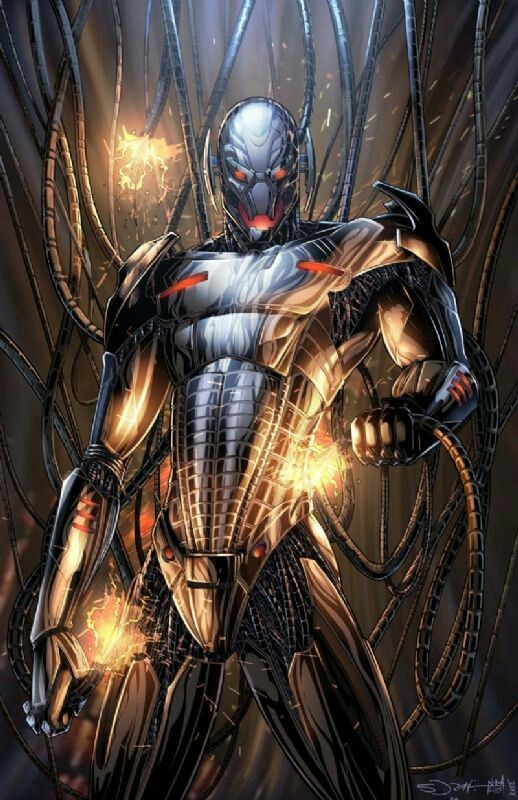
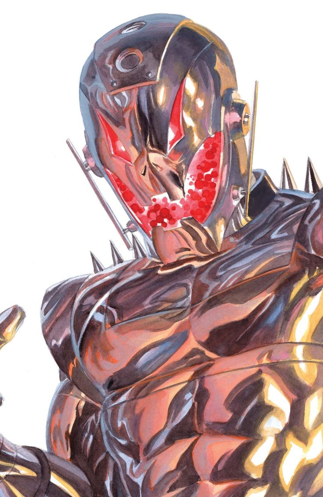

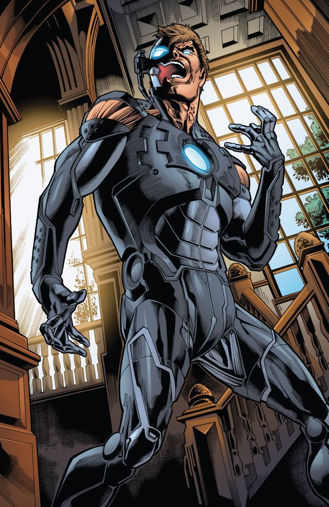
Capacités :
Les capacités d'Ultron changent en fonction de sa version.
Il possède une puissance physique lui permettant de soulever une masse d'environ 15 tonnes.
Il ne craint pas les radiations nucléaires et est invulnérable aux attaques basées sur le feu, le froid ou l'acide.
Il peut absorber l'électricité ou l 'énergie externe et s'en servir pour activer son programme interne de réparation.
Souvent, il possède des armes cachées, comme des lasers à concussion ou des rayons tracteurs.
Il possède une intelligence artificielle très développée, est a souvent éét capable d'auto-évoluer vers une version améliorée.

Apparence :
Ultron a possédé plusieurs apparences au cours de son évolution.
Généralement, c'est un grand robot avec un corps d'acier, voir d'adamantium, avec une bouche et de grands yeux rouges lumineux.
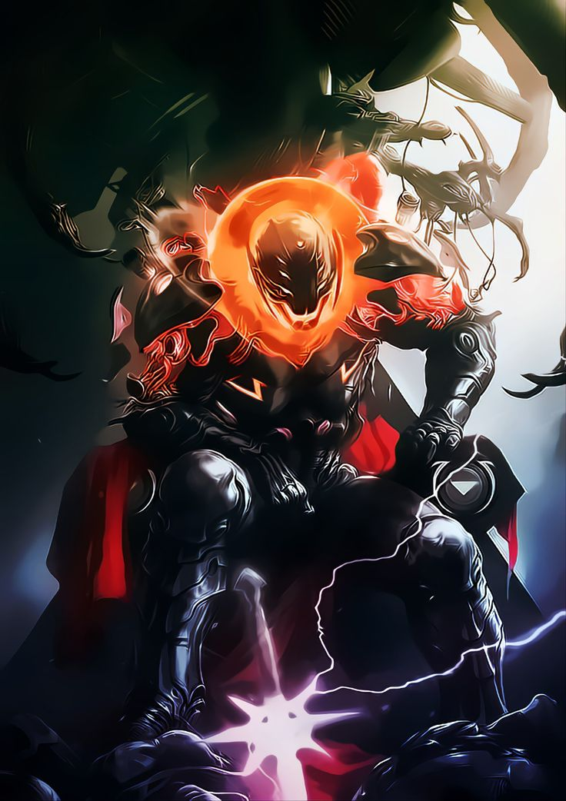
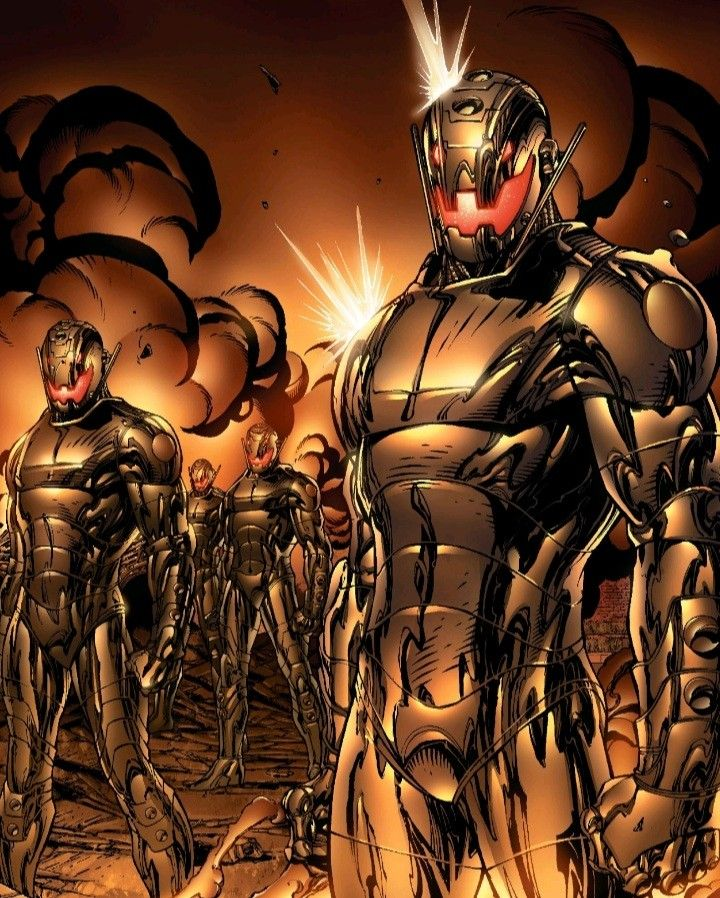

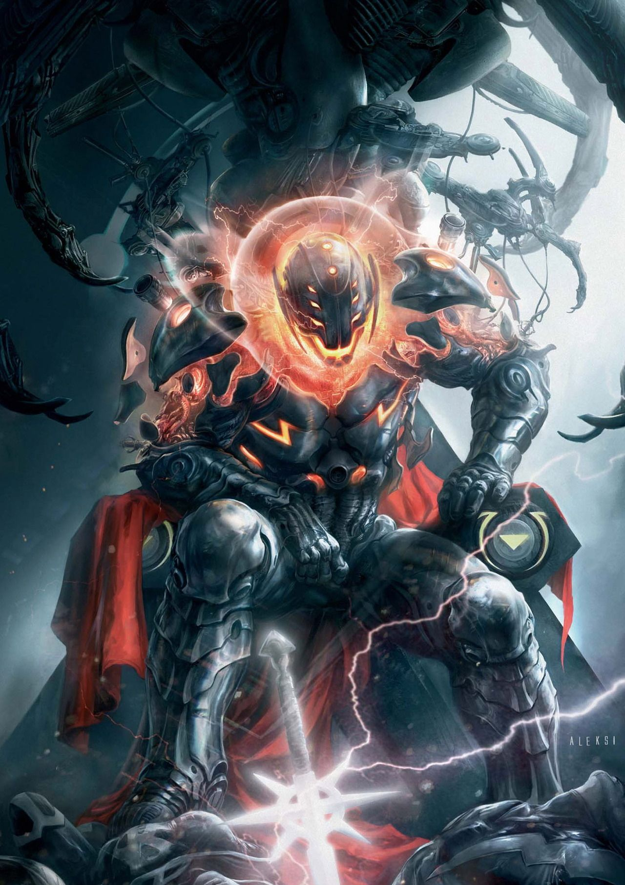
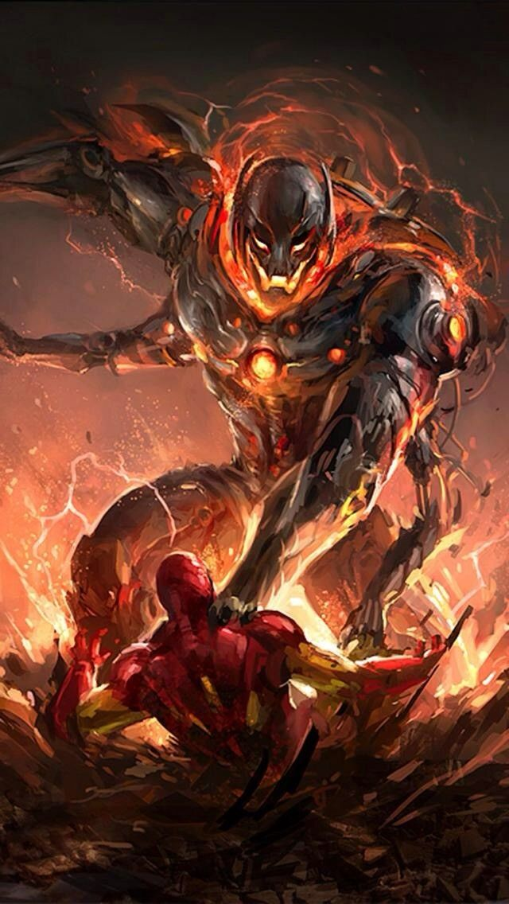
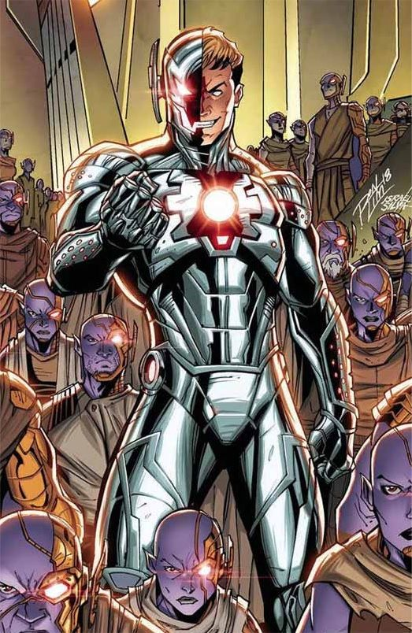